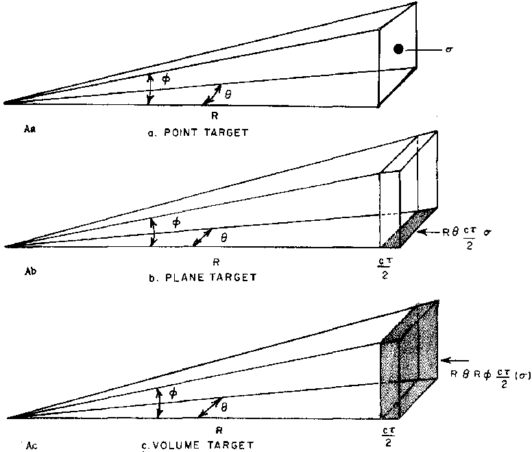

Ce chapitre couvre les études des capacités et limitations radar telles qu'elles peuvent être reliées à la
manifestation apparente d'objets volants non identifiés. Les études furent réalisées par le SRI à la suite d'un contrat avec l'Université du Colorado (Commande N° 73403) daté du ,
sous sous-contrat avec l'U.S. Air Force.
Le chapitre précédent de ce rapport, intitulé Mirage optique - Un survol de la littérature,
par William Viezee, couvre les phénomènes optiques dus à la réfraction de lumière par l'atmosphère.
Au fur et à mesure de leur disponibilité d'autres informations et résultats temporaires de ces études furent
communiqués de manière informelle au projet d'étude de l'Université du Colorado en accord avec le contrat
référencé.
Le but de ce chapitre est de fournir une compréhension basique du radar, des types de cibles qu'il peut détecter
dans des conditions diverses, et une base sur laquelle des rapports radar spécifiques pourraient être étudiés. Les
études d'incidents ovni spécifiques furent réalisées par le projet
Colorado (voir section 3, chapitre 5).
Au premier abord, le radar semble offrir une méthode
positive, non subjective d'observation des ovnis. Le radar semble réduire les donnés à des portées, altitudes,
vitesses, et des caractéristiques telles que la réflexivité radar. Par un examen plus détaillé cependant, la méthode radar
pour regarder un objet, bien que mécaniquement et électroniquement précise, est par de nombreux aspects
substantiellement moins complète que l'approche visuelle. De plus, les techniques-mêmes fournissant les mesures
objectives sont elle-mêmes suceptibles d'erreurs et anomalies pouvant être très trompeuses.
Dans ce chapitre nous considérerons comment le principe radar s'applique à la détection des cibles qui pourraient
être ou sembleraient être des ovnis, et tenterons d'établir les critères par lesquelles de telles manifestations
apparentes doivent être jugées afin de les identifier. Ne faisant aucune supposition quant à la nature des ovnis,
nous nous limiterons à décrire les principes par lesquels les radars détectent les cibles et les manières dont
cibles apparaissent lorsquelles sont détectées. En un mot, nous pouvons seulement spécifier la nature de la
détection radar de cibles en terme de principes physiques, que ce soit au regard de cibles réels et véritables ou au
regard des mécanismes mettant en avant la manifestation apparente de cibles. Il est espéré que ces spécifications
aideront dans l'examen de cas spécifiques lorsqu'ils interviennent. Même dans les cas où le radar pourrait
identifier des propriétés de cible qui ne peuvent être expliquées dans le cadre admis de la compréhension de notre
monde physique, l'authentique observation d'une cible possédant de telles propriétés n'apportera que peu ou pas
d'éclaircissement quant à sa nature au-delà des caractéristiques observées, et elle restera par conséquent non
identifiée.
Systèmes radar
RADAR est un acronyme pour RAdio Detection And Ranging. Il s'agit d'un appareil pour détecter certain types
de cibles et déterminée la portée de la cible. La majorité des radars sont également capables de mesurer les angles
d'azimut et d'élévation des cibles.
Les radars opèrent sur 3 principes fondamentaux :
que l'énergie radio est propagée à une vitesse uniforme et connue ;
que l'énergie radio est normalement propagée en lignes quasi-droites, dont la direction peut être contrôlée ou
reconnue ; et
que l'énergie radio peut être re-irradiée ou "réfléchie" par la matière interceptant l'énergie transmise.
Basiquement un radar consiste en un émetteur irradiant des
pulsations d'énergie électromagnétique via d'une antenne orientable, un récepteur détectant et amplifiant les
signaux retournés, et un type d'affichage présentant l'information sur les signaux reçus.
Les systèmes radar peuvent être séparés en 3 grandes
catégories :
les systèmes opérationnels,
les systèmes à usage spécial et
les systèmes expérimentaux et de recherche. Ceux-ci incluent des systèmes fixes et portables montés au sol, sur
avion, et sur navire.
De nombreux types de radars sont spécifiquement conçus pour réaliser des fonctions spécialisées. En géneéal, les
radars offrent une fonction de suivi ou de surveillance. Le radar de surveillance peut couvrir un secteur limité ou
360 ° et afficher la portée et l'azimut de l'ensemble des cible sur un PPI (Plan Position Indicator). Le
radar de suivi se vérouille sur la cible d'intérêt et la suit continuellement, fournissant les coordonnées de de la
cible y compris portée, vitesse, altitude et autres données. Les données sont habituellement sous forme de bande
perforée ou magnétique avec sortie sur affichage numérique. Les radars de contrôle de traffic aérien, de navigation
maritime et météorologiques appartiennent à la catégorie de surveillance ; tandis que les radars d'instrumentation,
d'atterrissage automatique d'appareils, de guidage de missile, et de contrôle du feu sont habituellement des radars
de suivi. Certains des systèmes radars de la nouvelle génération peuvent offrir les deux fonctions, mais ils s'agit
aujourd'hui de systèmes très spécialisés en nombre limité et qui ne seront pas discutés par la suite.
En plus des applications générales ci-dessus, chaque système radar dispose de fonctions sélectives dans des buts
divers. Par exemple, certains systèmes radar sont conçus pour pouvoir suivre des cibles en déplacement. Les signaux
d'objets stationnaires tels que le sol, les bâtiments ou même les objets en déplacement lent sont exclus de
l'affichage. Cela simplifie l'affichage et permet de suivre des appareils même s'ils se déplacent dans une zone dont
les forts signaux de bruit de fond au sol masqueraient l'écho de l'appareil.
En plus des nombreux types de radars, l'opérateur radar dispose de nombreuses fonctions de contrôle permettant de
changer des paramètres du système afin d'améliorer la performance du radar en accroissant la détectabilité de types
de cibles particuliers, minimisant ainsi les effets d'interférence, météo et/ou de bruit de fond. Ces contrôles des
systèmes radar peuvent modifier chacune ou quelque combinaison des caractéristiques suivantes :
Puissance d'émission
Taux de répétition des impulsions
Régulation de la sensibilité en fonction du temps / gain variable dans le temps
Transmitted pulse width
Temps de répone AGC
Bande-passante de récepteur IF
Fréquence d'opérateur de l'émetteur
Antenna scan rate
Polarization control of radiated and received energy
Skin or transponder beacon tracking
Receiver RF and IF gain
Fonctions de contrôle d'affichage
De nombreuses techniques de traitement du signal pour suppression du bruit de fond, des effets météo, indication
de cible en mouvement, rythme de fausse alarme, et contrôles de seuil.
L'opérateur radar lui-même est une partie importante des
systèmes radar. Il doit être bien formé et familier de l'ensemble des facteurs interragissants affectant l'opération
et la performance de son équipement. Lorsqu'un opérateur expérimenté est déplacé en un nouvel endroit, une partie
importante de sa reformation est d'apprendre les facteurs pertinents liés aux anomalies attendues en raison des
facteurs géographiques et météorologiques locaux.
2 autres groupes de personnes affectent également la performance du système radar. Il s'agit de l'ingénieur de
conception du radar et du personnel de maintenance du radar. Le concepteur cherche à élaborer un radar un
accomplisse la performance désirée, en plus d'être un système à la fois fiable et maintenable. Des techniciens de
maintenant hautement qualifiés surveille régulièrement le système pour s'assurer qu'il fonctionne correctement et
n'est pas dégradé par des défaillances système de composants ou affecté par d'autres systèmes électroniques qui
pourraient causer des interférences electrical ou une défaillance système.
Au cours des 30 dernières années, la conception des systèmes radar a été considérablement améliorée. Les radars
fabriqués aujourd'hui sont plus complexes, souples, sensibles, précis, plus puissants et fournissent plus d'aides à
l'opérateur sur le console d'affichage pour le traitement des données. Ils sont aussi plus fiables et faciles à
maintenir. Dans le processus, ils sont devenus plus sensibles à clutter, interference, propagation anomalies, and
require better trained operating and maintenance personnel. Furthermore, with the increased data-processing aids to
the operator, the more difficult becomes his target interpretation problem when the radar systems components begin
gradually to degrade or when the propagation environment varies far from average conditions. The more sophisticated
radar systems become, the more sensitive the system is to human, component, and environmental degradations.
Fondamentaux radar
La détection de cibles radar est basée sur le fait que
l'énergie radio est réfléchie ou re-rayonnée vers le radar
par divers mecanismes. En émettant des impulsions d'énergie puis en "écoutant" un signal de retour réfléchi, la
cible est localisée. La période de temps où le radar émet une
impulsion est appelée longueur d'impulsion et est généralement mesurée en microsecondes (millionnièmes de seconde)
ou exprimée en terme de longueur de la crête avant à la crête arrière de l'impulsion (une impulsion de 1
microseconde fait 984 pieds de long, les ondes radios voyageant comme la lumière à 186 000 miles statutaires/s). Le
rythme auquel les impulsions sont émises est appelé taux de répétition des impulsions. Lorsque des impulsions sont
émises à un taux élevé, le temps d'écoute du récepteur entre les impulsions à la recherche d'échos de retour est
réduit d'autant que la distance correspondante à laquelle l'énergie peut voyager et revenir. Cela signifie que la
portée non ambiguë maximum décroit avec le taux de répétition des impulsions. Des cibles plus éloignées pourraient
toujours retourner un écho au radar après que l'impulsion suivante ait été émise mais elles sont affichées par le radar comme venant de l'impulsion la plus récente. Ces échos
que l'on appelle de voyages multiples pourraient être trompeurs, puisqu'ils sont affichés à des distances plus
proches que leur position réelle.
D'autres caractéristiques opérationnelles importantes d'un radar sont ses puissance émise et longueur d'onde (ou
fréquence). La force d'un écho venant d'une cible varie directement avec la puissance d'émission. La longueur d'onde
est importante dans la détection de certains types de cibles comme celles composées de nombreuses petites
particules. Lorsque les particules sont petites par rapport à la longueur d'onde, leur détectabilité est grandement
réduite. Ainsi la bruine est détectable par des radars à courte longueur d'onde (0,86 cm) mais n'est généralement
pas détectable par des radars à longueur d'onde plus longue (23 cm).
L'énergie sortant du radar est concentrée en un rayon par l'antenne. Cette radiation du signal dans un direction
spécifique rend possible de déterminer les coordonnées de la cible d'après la connaissance des angles d'azimut et
d'élévation de l'antenne. Le schéma désiré de l'antenne varie avec le but spécifique pour lequel le radar a été conçu. Des radars de recherche pourraient avoir de larges rayons
verticaux et des rayons horizontaux étroits de sorte de l'azimut des cibles peut être déterminé avec précision. Les
évaluateurs d'altitude d'un autre côté ont de large
rayons horizontaux de sorte de la hauteur des cible peut être déterminé avec précision. Dans chacun des cas la
surface radiante et réceptrice de l'antenne est généralement une section de paraboloïde.
Un rayon circulaire pourrait être décrit comme un cône avec une radiation maximum le long de son axe et diminuant
avec la distance angulaire depuis le centre. Le rayon est décrit par l'angle entre les points de demi-puissance (la
distance angulaire à laquelle la puissance radiée est la moitié de celle le long de l'axe du rayon). Dans le cas de
rayons non-circulaires 2 angles sont utilisés, 1 pour décrire la largeur horizontale du rayon, et un 2nd pour
décrire la largeur verticale du rayon. Par la suite dans ce rapport la détection de cibles par énergie parasite hors
du rayon principal sera discutée.
La taille du rayon pour une longueur d'onde donnée dépend de la taille de la parabole. Pour une parabole d'une
taille donnée plus la longueur d'onde est longue, plus le rayon est large.
Lorsque l'énergie radiée illumine un objet, l'énergie (à l'exception d'une petite quantité absorbée comme chaleur)
est re-radiée dans toutes les directions. La quantité radiée directement en retour vers le radar dépend de la section de coupe radar de la cible. Differences between geometrical
cross-section and radar cross-section are related to the material of which the object is composed, its shape, and
also to the wavelength of the incident radiation. The radar cross-section of a target is customarily defined as the
cross-sectional area of a perfectly conducting sphere that would return the same amount of energy to the radar as
that returned by the actual target. The radar cross-section of complicated targets such as aircraft depends on the
object's orientation with respect to the radar. A jet aircraft has a much smaller radar (and geometric)
cross-section when viewed from the nose or the tail than when viewed broadside.
Les équations relatives aux divers paramètres sont données, avec des degrés de complexité divers, dans les livres
sur les radar. Sous leur forme la plus simple les équations
pour la puissance moyenne reçue sont :
Figure 1 : Sections de coupe radar pour divers types de cibles

Ces équations montrent que l'intensité du signal d'écho varie according to whether the target is a point, a
relatively small area, or a very large volume such as an extensive region of precipitation. The echo signal
intensity of point targets varies inversely with the fourth power of the distance from the radar to the targets.
The, intensity of area targets varies with the cube of the distance, and that of large volume targets, with the
square of the distance.
La figure 1 illustre how the radar beamwidth and the cross section area or volume of the target interact to give
these different variations with range of the returned signal. In Fig Aa, the point target has a radar cross-section
[sigma]. In Fig. Ab there may be a number of targets with radar cross-section sigma over an area with dimensions of
half the pulse length and the beam width at range R. Replacing sigma in equation (1) with this new expression for
radar cross-section cancels one R in the denominator giving the R3 relationship. When the target is many
sigma's spread over a volume with dimensions determined by range, horizontal and vertical beamwidth, and half the
pulse length (Fig. Ac) R appears in the numerator twice, thus cancelling an R2 in the denominator of
equation (1).
Because of differences in variation with distance of the return signal from various types of targets it is apparent
that with combinations of targets the point targets might not be detectable. For example, an aircraft cannot be
detected when it is flying through precipitation or in an area of ground targets unless special techniques are used
to reduce the echo from precipitation or ground clutter.
Information on signals returned to the radar by a target may be presented to an operator in a number of ways; by
lights or sounds that indicate there is a target at a selected location; by numbers that give the azimuth, elevation
angle, and range of a selected target; or in 'picture' form showing all targets within range that are detected as
the antenna rotates. The latter form of presentation is called a Plan Position Indicator (PPI). Plate 65 shows a
photograph of a PPI. This photograph is a time exposure equal to the time for one antenna revolution. The center of
the photograph is the location of the radar station. Concentric circles around the center indicate distance from the
station. In this case the range circles are at 10 mi. intervals, so the total displayed range is 150 mi. North is at
the top of the photograph and lines radiating from the center are at 10° intervals. A PPI display such as this
corresponds very closely to a map. Often overlays with locations of cities, state boundaries, or other pertinent
coordinates are superimposed over the PPI to aid in locating echoes. The plate shows a number of white dots or areas
at various locations. These may be echoes from a variety of different targets, or they may be the result of
interference or system malfunction.
The radar operator must keep watch of this entire area (70,650 sq. mi. in this example) and try to determine the
nature of the targets. If he is a meteorologist he watches for and tracks weather phenomena and ignores echoes which
are obviously not weather-related. If he is an air traffic controller he concentrates on those echoes that are from
aircraft for which he is responsible. Many unexplained radar echoes are not studied or reported for several reasons.
One of the reasons might be that the operators in general only track targets that they can positively identify and
control. Since a radar operator can only handle a limited number (6 to 8) of targets simultaneously, he might not
take serious note of any strange targets unless they appear to interfere with the normal traffic he is vectoring.
Even when the unexplained extraordinary targets are displayed, he has little time available to track and analyze
these targets. His time is fully occupied observing the known targets for which he is responsible. In addition, the
operator is familiar with locally recurring strange phenomena due to propagation conditions and suspects the
meteorological environment as being the cause. In general, the operator seldom has a way in which to record the
displayed data for later study and analysis by specialists.
In addition to the tracking of various targets he must also be aware of the possibility of malfunction of the
radar.
Fiabilité du système
Two types of failures occur in a radar system: those that are catastrophic and those that cause a gradual
degradation. In spite of good maintenance procedures, there will be system component failures that occur due to
external events such as ice or wind loading, rain on the cabling and connectors, bugs and birds in the feed
structure. The operator is not always immediately aware of such failures. He is usually located in a soundproofed
and windowless room remote from the transmitter, antenna, and receiving hardware. The operator has available to him
only the console display and readout equipment. Catastrophic systems failure is usually self-evident to the
operator. When the transmitter power tube fails, or the antenna drive unit fails, the operator is aware of this
immediately on his PPI display. But when the gain in a receiving tube decreases, or the system noise slowly
increases due to a component degradation, or the AFC in the transmitter section begins to go out of tolerance over a
period of days causing increased frequency modulation or "pulse jitter" in the transmitted pulse, time may elapse
before the operator becomes aware of the slowly deteriorating performance. Reduced sensitivity or the increased
reception of extraneous targets from ground clutter or nearby reflecting structure is often evidence that the radar
system is deteriorating.
It can be considered that a major system component of a typical radar might be subject to catastropic failure every
250 to 2,000 hours of operation (5 to 36 average failure-free days) and that graceful degradations of components
occur continually. Possible failure thus becomes one of the first causes to be considered in analyzing unusual radar
sightings. The next factor will be possible unusual propagation effects to which the radar is subject. Analysis of
extraordinary sightings is further handicapped by the fact that the displayed data of the sighting usually are not
recorded and that any explanations must frequently be based upon interpretations by the operators present at the
time of the sighting. The point is that the operator, the radar, and the propagation medium are all fallible parts
of the system.
Relations entre échos et cibles
Il y a 5 relations possibles entre échos et cibles radar. Il
s'agit de :
aucun écho - aucune cible ;
aucun écho - lorsqu'un objet visuel semble être en position d'être détecté ;
écho - non lié à une cible ;
écho - d'une cible dans une position autre que celle indiquée ;
écho - d'une cible à la localisation indiquée.
Les 1ère et dernière possibilité sont indicatives d'un fonctionnement normal. Il est possible que (b) devienne
important lorsqu'il y a un objet observé visuellement. Là, d'après la connaissances des types de cible détectables
par le radar, une connaissance des caractéristiques de
l'objet visuel pourrait être obtenue.
Les situations (c) où il existe un écho apparent mais pas de cible sont celles dans lesquelles la manifestation sur
le PPI est dû à un signal qui n'est pas dû à une portion reradiée de l'impulsion transmise mais est due à une autre
source. Celles-ci sont discustées dans une section ultérieure de ce chapitre.
Les situations où l'écho vient d'une cible non présente à la position indiquée (d) pourraient survenir en raison de
l'une ou d'une combinaison des raisons suivantes. D'abord, une courbure anormale du rayon radar pourrait avoir lieu à cause des conditions
atmosphériques. Ensuite, une cible détectable pourrait être présente au-delà de la portée désignée du radar et être présentée à l'affichage comme si elle était au
sein de la portée désignée, par exemple, des échos multiple-trip de satellites artificiels avec de grandes sections de
coupe radar. Egalement, l'énergie parasite de l'antenne
pourrait être réfléchie par un obstacle à un cible dans une direction assez différente de celle dans laquelle
l'antenne est dirigée. L'écho étant affiché le long de azimuth vers lequel l'antenne est pointée, la position
affichée sera incorrecte. Enfin, des cibles pourraient être détectées par radiation dans les lobes latéraux et
seraient affichées comme si elles avaient été détectée par le rayon principal.
La possibilité (e) listée ci-dessus englobe la large gamme de situations où une cible se trouve au lieu indiqué sur
le système d'affichage. La préoccupation principale dans ce cas est l'identification de la cible.
Les relations possibles listées ci-dessus montrent que l'interprétation d'un écran radar n'est pas simple. Pour
tenter d'identifier des cibles, l'opérateur doit connaître les caractéristiques de son radar ; s'il fonctionne ou non de manière adéquate ; et le
type de cibles qu'il est capable de détecter. Il doit être pleinement au courant des conditions ou des événements
par lesquels les échos seront présentés sur le radar à un position différente de la véritable localisation de la
cible (ou dans le cas d'interferences par aucune cible). Enfin, l'opérateur doit acquérir des informations
collatérales (données météo, transpondeur, communication vocale, observations visuelles ou informations [handover]
d'un autre radar avant de pouvoir être absolument sûr qu'il a identifié
un écho inhabituel.
When there is an echo on the PPI of a search radar, the operator must determine the nature of the target. The
information he has is relative signal intensity, some knowledge of fluctuation in intensity, position, velocity, and
behavior relative to other targets. In addition he may be able to infer altitude if he is able to elevate the beam
and reduce the gain to find an angle of maximum signal intensity. Previous sections of this chapter have briefly
described a number of targets that search radars are capable of detecting. From the discussion it is apparent that
there is overlap in the characteristics of different types of targets. Signal intensities, for example, range over
several orders of magnitude. Wind-borne and powered targets may have comparable ground speeds depending on the wind
speed. Many different types of targets show echo fluctuations. Thus there is no specific set of characteristics that
will permit a given echo to be unambiguously identified as a specific target. At best all one can do is say that a
given echo probably is, or is not, a specific target based on some of the observed characteristics.
Vitesse de la cible
Determination of the direction and speed of an echo in the PPI of a search radar requires some assumptions. A long
range search radar antenna generally rotates at about 4 - 8 rpm. At 6 rpm, an antenna rotates through 360° in 10
sec. (=36°/sec). If the horizontal beam width of the antenna is 3.6° a point target will be within the beam for
0.1 sec. as the beam sweeps past. Then 9.9 sec. elapse until the beam again sweeps the target. If on this next
revolution there is an echo in the general vicinity of the target detected on the previous sweep the operator must
decide whether this echo is from the same target that was detected previously or is from a new target. If he
assumes the two echoes are from the same target, he can then compute a velocity. If his assumption was correct, if
his computations are accurate, and if the target is at the indicated locations, the computed ground speed is
correct. If, however, the two echoes are not from the same target or are from a target that is not at the
indicated location, then the computed speed will have no meaning.
The speed computed from the displacement of the echoes from a target at the indicated location represents the
ground speed of the target. To aid in the identification of slow moving targets. it is necessary to determine its
airspeed. This requires knowledge of the wind velocity at the location including altitude and time of the
detection, and the assumption that the target is in essentially level flight. It is often difficult to determine
precisely the wind velocity at a given point due to the wide spacing of stations that measure winds aloft and the
six-hour interval between observations. Except in complex situations, it is usually possible, however, to
extrapolate measured winds for a given location with sufficient accuracy to determine whether the target velocity
and wind velocity have sufficient similarity to justify a conclusion that the target is probably windborne.
Conversely if there is a large disparity between wind velocity and target velocity a logical conclusion would be
that the target could not be windborne.
When an echo that has been moving in an orderly manner on the PPI suddenly disappears, the information for
computing its speed also disappears. Any attempts to guess the speed would require the operator to make specific
assumptions of the reason for the disappearance. He might assume that the target moved out of range during the
brief time required for one antenna revolution. Such an assumption would probably require a very high speed
target. Or the operator might assume that the target decreased altitude to a position below the radar horizon. If
the target was located close to the radar horizon, an altitude change of a few tens of feet would be sufficient
for it to disappear and the required speed (vertical velocity) would be quite small.
Target Intensity and Fluctuations
The power received from a point target is directly proportional to the radar scattering cross-section of the
target and inversely proportional to the fourth power of the distance from the radar to the target. Therefore, for
an equal signal to be received from two targets, a target 10 mi. from the radar would have to have a radar
cross-section 10,000 times as large as a target at 1 mi. Examples of targets with differences in cross-sections of
this order of magnitude are birds with cross-sections of 0.01 m2 or less and aircraft with
cross-sections of up to 100 m2. Intensity differences such as these can be measured (by gain reduction
to threshold of detection), but the nature of display systems such as PPI's is such that differences are
considerably reduced. An echo on the PPI is composed of many small dots that result from an electron beam that
excites the coating on the face of the tube causing it to emit light. The coating may be designed to emit light
only when the electron beam excites it or may continue to emit light for some time after the excitation has ceased
(persistence). The latter is usually the case for PPI's where the operator depends on persistence to see the 360°
coverage provided by the rotating antenna. Haworth (1948) states that from 150 - 200 spots can be resolved along
the radius of magnetically deflected radar tubes. Gunn (1963) points out that since the PPI trace lines converge
at the center the light output per unit area of the tube face will decrease with increasing radial distance from
the center. As a result echoes near the center are 'painted' with a higher intensity than echoes of comparable
strength anywhere else on the display. These characteristics of the display system act to conceal further the
relative magnitudes of the signal intensity of targets at different ranges, so that the operator loses much of the
available radar information when it is displayed on the PPI. Fluctuations are smoothed out, and the intensities
are normalized to some extent. The result is that he can give some information on an unknown target in comparison
with a known target at the same range. Positive knowledge of the nature of a target at a given range can
only result from auxiliary data. For example, if the operator is in contact with an aircraft that is over a given
point and he has an echo at that point he will logically assume the echo is from the aircraft if the echo is
moving on the course and at the speed reported by the pilot. He could then compare the intensity and fluctuations
of other targets at that range with those of the known target and draw some conclusions as to whether they might
be larger or smaller than the aircraft.
Behavior Relative To Other Targets
Very little can be said about a target from the examination of a single echo but some information can be obtained
by comparing the echo with other echoes on the remainder of the PPI. When the echo is interpreted in terms of the
appearance and behavior of other echoes a logical explanation may become evident.
For example, the author has seen isolated targets on the PPI that were moving toward the radar in a direction
opposite to that of the wind, so that it was obvious that they could not be windborne. A slight elevation of the
antenna caused them to disappear so it was apparent that they were at low levels. No attempt was made to send
aircraft to the vicinity to look for targets. All other attempts to interpret the nature of real targets on that
half of the PPI that would return the displayed echoes were futile. When the remainder of the PPI was examined it
was found that the speed of a line of thunderstorms moving toward the station was the same as that of the echoes
to the east. The direction of movement, however, was the same as that of the wind and not opposite, as with the
echoes to the east. Further, the distance to the thunderstorms to the west was the same as the distance to the
unknown echoes to the east. With this additional information it seemed likely that the echoes to the east were
reflections of portions of the thunderstorms to the west. The obstacles causing the reflections were subsequently
identified as large nearby chimneys that extended only slightly higher than the height of the radar so that when
the antenna was elevated slightly the chimneys were below the main beam and no longer caused reflections.
Since the reflectors (chimneys) were very narrow, the reflection echoes were very narrow but their length was
equal to the diameter of the precipitation area. The echoes therefore had a long, narrow (cigar-shaped)
appearance. Since the apparent lengths in some cases were 10 - 15 mi. they were not mistaken for some type of
flying vehicle.
Although the solution of the case discussed here is a simple, and, on the surface, obvious one, it does
demonstrate the necessity of studying the entire PPI, not just one or two odd echoes. The case also illustrates
how echo characteristics become distorted when the return is from a target not at the indicated location. The
long, narrow shapes of the reflection echoes, a vertical extent of only 1° - 2° at ranges less than 50 mi. and
movement against the wind all tended to rule out precipitation as the target.
The problem of identifying reflections is very difficult. The simplest case is where the reflector and reflected
target are both fixed. The reflected echo is always in the same position and whether it appears or not depends on
propagation conditions and if the reflector is of limited vertical extent on antenna elevation angle.
When the reflector is fixed and the target is moving the reflected echo also moves but in a different direction
than the true target. Still the geometry is relatively simple and the reflected echo will move toward or away from
the radar along a radial line extending from the radar across the reflector. The reflected echo will appear to
move toward the radar when the distance from the radar to the true target is decreasing and away from the radar
when the distance from the radar to the true target is increasing. The apparent speed of the reflected echo toward
or away from the radar corresponds to the speed of the true target toward or away from the reflector. This is not
its actual ground speed. A target could move at 500 knots along a constant-distance circle from the reflector, yet
the reflected echo would be stationary. Only if the target moved directly toward or away from the reflector would
the reflected echo have the same speed as the target; but the speed of the reflected echo can never exceed that of
the target.
When the reflector is moving and the target is stationary (see discussion of Fig. 13) the reflected echo track is
always further from the radar than the reflector track. The reflection echo will follow roughly the same track as
the reflector but its apparent speed may be much greater depending on the distance between the reflector and
target. When the reflector is far from the target the apparent speed of the reflected echo will be much greater
than the true speed of the reflector. When the reflector is very close to the target the reflected echo will be
close to the position of the reflector and its apparent speed will be comparable to that of the reflector.
The situation where both the reflector and the target are moving is very complex. The apparent speed of the
reflected echo will depend on the relative speeds of both reflector and target. When the reflector is moving
slowly, the condition of a stationary reflector will be approached but not quite realized. That is, the reflected
echo will have a maximum apparent speed that does not greatly exceed that of the target, but since the reflector
is moving, the reflection echo will not be restricted to motion along a single radial line.
When the reflector is moving rapidly compared to the target, the result is similar to the case of a fixed target,
that is the reflected echo track approximates the reflector track but its apparent speed will be greater. When the
target moves, the track correspondence is not as good and the reflected echo's apparent speed may greatly exceed
that of the reflector.
The most complex cases are those in which a moving reflector is not illuminating a single target but may show a
different target on each scan of the radar. In these cases there is no correspondence between reflected echo track
and reflector track. Speed computations in these cases are erroneously based on multiple targets. Attempts to
compute a speed therefore produce values that can vary from some very low speeds to thousands of knots.
It is obvious from the preceding discussion that it is nearly impossible to identify an unknown target working in
real time at the PPI. To establish that an unknown is a reflection echo requires a determination of whether it is
at the same azimuth as a reflector. Since any one of many other echoes could be the possible reflector, the
geometry would have to be applied to each one in turn. When numerous echoes are on the PPI this is impossible.
Much valuable information can be recorded for later detailed study by photographing the PPI with a radarscope
camera during each revolution of the radar antenna. Later the films can be studied, either as time-lapse motion
pictures or frame by frame. For many years this type of radarscope photography has been used for studies of
radar-detected precipitation patterns and has provided insights into meteorological phenomena that would have been
impossible from subjective verbal descriptions of the echo patterns.
Radarscope photographs of the PPI have all the limitations of the PPI presentation itself. They cannot show
intensity differences or minor intensity fluctuations. They do have the powerful advantage of making it possible
to review a puzzling echo hundreds of times at various rates of viewing and to study the appearance and behavior
of all echoes before, during and after the episode. Only by the study of radarscope films and many other
supporting data is it possible to arrive at even a tentative conclusion that a given echo cannot be explained.
Conclusions
Radar is a valuable instrument for detecting and ranging targets that are not visible to an observer due to
darkness, extreme distance, intervening rain, cloud cover, haze, or smog. Radar can also detect, or reflect from,
atmospheric discontinuities that are not visible to the eye. The echoes of real targets and apparent targets that
result from RPI, reflections, or system noise may on occasion produce scope presentations that are extremely
difficult or impossible to interpret. The major difficulty is that while radar is designed to beam radiation in a
specific direction and detect targets within a specific distance, it does not always do so. The transmitted
radiation, while concentrated in a main beam, goes out as well, in many other directions. Portions of the main beam
and the lobes may be reflected in other directions by nearby objects, by solid targets a considerable distance from
the radar, or by layers or small volumes of atmospheric inhomogeneities. All of this radiation in various directions
is refracted by atmospheric temperature and moisture profiles to deviate further from its original path. Portions of
this radiation that impinge upon any of a wide variety of targets are reflected back along a reciprocal path and
presented on the PPI as if they were at the position determined by the antenna elevation and azimuth, and the time
required for the most recently transmitted pulse to travel out and back. Some of the displayed echoes will represent
targets at the indicated locations. Some of the displayed echoes will be from targets not at the indicated position,
and some of the echoes will not represent targets at all, but will be due to system noise or RFI. Since radar does
not differentiate between the unique characteristics of different types of targets, it is impossible for even the
most experienced radar operator to look at the PPI and positively identify all echoes on the scope.
Some auxiliary information on the possible nature of the targets may be derived from the study of the appearance of
the PPI on successive antenna revolutions or from a series of PPI photographs. These successive presentations show
the interpreter apparent motion and changes in intensity. This additional information is useful but still does not
permit positive identification of the target. Only such generalizations may be made as that the target appears to be
moving at 250 knots so it cannot be precipitation, birds, or a balloon. To even make this generalization the
operator has to know or make some assumptions about the probable wind speed in the vicinity of the apparent target.
The data presented on the PPI of a single radar, therefore, do not permit the operator to say very much about the
possible nature of a target displayed as an echo on the PPI. Many additional data are required such as
meteorological conditions between the radar and the apparent location of the target, and auxiliary radar information
such as target elevation angle and the bearing of the target from another radar. The detection of a target at the
same location by two or more radars with different characteristics would usually rule out multiple trip echoes,
reflections, and detection by side lobes. Surveillance by more than one radar would also aid in establishing
continuity along an echo track if the rotation rate of the two radars was such that they were 180° apart so that one
would "see" the echo when the other was "looking" 180° from it. The problem of determining speed is based on the
assumption that a single target has moved a specific distance during the time that the beam is not aimed at it. In
many cases this may be an erroneous assumption, and it requires either continuous tracking or surveillance by
numerous radars to determine whether only a single target is involved.
It is hoped that this discussion of radar has convinced the reader that radar data are only a tool to be used in
conjunction with many other bits of information for the solution of various problems. Radar alone cannot specify the
exact nature of all targets especially when it was probably specifically designed to detect specific target types.
It can only provide the operator with some generalized information about the target and he can only draw some
general conclusions based on a number of assumptions he must make. If he makes the wrong assumption, he will come to
an erroneous conclusion.
This does not mean that radar could not be a useful tool in any further studies of the UFO problem; it simply points
out the need for, and problems of, gathering photographic and other data from a number of different types of radar
on specific incidents before the data could be carefully analyzed and interpreted with any degree of confidence.
Bibliographie
Allen, R.J. and M.G.H. Ligda. "Services for Bird Counter Study and Design," Final Report, Contract DA 42-00 7
AMC-306 (Y), Stanford Research Institute, Menlo Park, (1966).
Atlas, D. "Radar Lightning Echoes and Atmospherics in Vertical Cross Section," Recent Advances in Atmospheric
Electricity, Pergamon Press, New York, (1958a), 441-459.
Atlas, D. "Radar as a Lightning Detector," Proc. Seventh Wx. Radar Conf., Miami Beach, Fla. (Available from
American Meteorological Society, Boston, Mass.), (1958b), C-l - C-8.
Atlas, D. "Sub-Horizon Radar Echoes by Scatter Propagation," J. Geophysical Res., Vol. 64, (1959),
1205-1218.
Atlas, D. "Advances in Radar Meteorology," Advances in Geophysics, Vol. 10, Academic Press, New York,
(1964), 317-478.
Atlas, D. "Further Remarks on Atmospheric Probing by Ultrasensitive Radar," Paper presented to the Panel on Remote
Atmospheric Probing of the National Academy of Sciences, Chicago, Ill., (1968).
Atlas, D. and K.R. Hardy. "Radar Analysis of the Clear Atmosphere: Angels," Paper presented to the XV General
Assembly of the International Scientific Radio Union, Munich, (1966a).
Atlas, D., K.R. Hardy, and K. Naito. "Optimizing the Radar Detection of Clear Air Turbulence," J. Appl.
Meteor., Vol. 5, (1966b), 450-460.
Bauer, J.R. "The Suggested Role of Stratified Elevated Layers in Transhorizon Short Wave Radio Propagation," Tech.Rep.,
No. 124, Lincoln Lab. M.I.T., (1956).
Bean, B.R. and E.J. Dutton. "Radio Meteorology," NBS Monograph 92, U.S. Government Printing Office,
Washington, D.C. (1966).
Blackmer, R.H., Jr. "The Lifetime of Small Precipitation Echoes," Proc. Fifth Wx. Radar Conf. Asbury Park,
N.J., (1955), 103-108.
Blackmer, R.H., Jr. "Anomalous Echoes Observed By Shipborne Radars," Proc. Eighth Wx. Radar Conf., San
Francisco, Calif. (available from AMS, Boston, Mass.), (1960), 33-38.
Blackmer, R.H. Jr. and S.M. Serebreny. "Analysis of Maritime Precipitation Using Radar Data and Satellite Cloud
Photographs," J. Appl. Meteor., Vol. 7, (1968), 122-131.
Bonham, L.L. and L.V. Blake. "Radar Echoes from Birds and Insects," The Scientific Monthly, (April, 1956),
204-209.
Borden, R.C. and T.K. Vickers. "A Preliminary Study of Unidentified Targets Observed on Air Traffic Control
Radars," Technical Development Report No. 180, Civil Aeronautics Adminstration Technical Development and
Evaluation Center, Indianapolis, C1953)
Browning, D.A. and D. Ktlas. "Velocity Characteristics of Some Clear-Air Dot Angels," J. Atmos. Sci., Vol.
23, (1966), 592-604.
Eastwood, F. Radar Ornithology, Methuen and Co., Ltd., 11 New Fetter Lane, London, 1967.
Eastwood E., G.A. Isted and G.C. Rider. "Radar Ring Angels and the Roosting Behaviour of Starlings," Proc.
Royal Soc., London, Vol. 156, (1962), 242-267.
Eastwood, E. and G.C. Rider. "Some Radar Measurements of the Altitude of Bird Flight," British Birds, Vol.
58, (1965), 393-420.
Edrington, T.S. "The Amplitude Statistics of Aircraft Radar Echoes," Trans. IEEE, Vol. MIL 9, (1965),
10-16.
Ferrari, V.J. "An Epidemiologic Study of USAF Bird Strike Damage and Injury, 1960 to 1965," Life Sciences
Division, Norton Air Force Base, California, (1966).
Geotis, S.G. "Some Radar Measurements of Hailstones," J. Appl. Meteor., Vol. 2, (1963), 270-275.
Glick, P.A., "The Distribution of Insects, Spiders and Mites in the Air," Tech. Bull. No. 673, U.S. Dept.
of Agriculture, (1939)
Goldstein, H., D.E. Kerr, and A.E. Bent. "Meteorological Echoes," M.I.T. Rad. Lab. Series, McGraw Hill, New
York, Vol. 13, (1951), 588-640.
Glover, K.M., K.R. Hardy, C.R. Landry, and T. Konrad. "Radar Characteristics of Known Insects in Free Flight," Proc.,
Twelfth Wx. Radar Conf., Norman, Oklahoma, (1966), 254-258.
Gunn, K.L.S. "Tube Face Filters for Line Space Compensation," Proc. Tenth Wx. Radar Conf., Washington, D.C.
(available from AMS, Boston, Mass.), (1963), 361-364.
Gunn, K.L.S. "Tube Space Filters for Line Space Compensations," Proc. Tenth Wx. Radar Conf., Wash., D.C.,
(1965).
Gunn, K. L.S., and T.W.R. East. "The Microwave Properties of Precipitation Particles," Q.J. Roy.
Meteor.Soc., Vol. 80, (1954), 552-545.
Hajovsky, R.G., A.P. Deam, and A.H. La Grone. "Radar Reflections from Insects in the Lower Atmosphere," IEEE
Trans., Vol. AP-14, (1966), 224-227.
Hansford, R.F. (Editor) Radio Aids to Civil Navigation, Heywood and Co. Ltd., London, 1960.
Hardy, K.R., D. Atlas, and K.M. Glover. "Multiwavelength Backscatter From the Clear Atmosphere," J. Geophys.
Res., 71, No. 6, (1966), 1537-1552.
Hardy, K.R. and I. Katz. "Probing the Atmosphere with High Power, High Resolution Radars," Paper presented to the
Panel on Remote Atmospheric Probing of the National Academy of Sciences, Chicago, Ill., (1968a).
Haworth, L.J. "Introduction to Cathode Ray Tube Displays," M.I.T. Rad. Lab. Series, Vol. 22, Edited by T.
Soller, M.A. Starr, and G.E. Valley, Jr., McGraw Hill, New York, (1948).
Hilst, G.R., and G.P. MacDowell. "Radar Measurements of the Initial Growth of Thunderstorms," Bull. AMS,
31, (1950), 95-99.
Hiser, H.W. "Some Interesting Radar Observations at the University of Miami," Proc. Fifth Wx. Radar Conf.,
Asbury Park, N.J., (1955), 287-293.
Houghton, F. "Detection, Recognition and Identification of Birds on Radar," Proc. Eleventh Wx. Radar Conf.,
(1964), 14-21.
Konrad, T.G., J.J. Hicks, and E.B. Dobson. "Radar Characteristics of Birds in Flight," Science, Vol. 159,
(1968), 274-280.
Lack, D. and G.C. Varley. "Detection of Birds by Radar," Nature, Vol. 156, (1945)
La Grone, A., A. Deam, and G. Walker. Radio Sci. J. Res. (1964, 1965), 68D, 895.
Lane, J. A. "Small Scale Irregularities of the Radio Refractive Index of the Troposphere," Nature, Vol.
204, (1964), 43 8-440.
Levine, D. Radargrammetry, McGraw Hill, N.Y. 1960.
Ligda, M.G.H. "The Radar Observation of Lightning," J. Atmos. and Terrestrial Physics, Vol. 9, (1956),
329-346.
Ligda, M.G.H. "Middle-Latitude Precipitation Patterns as Observed by Radar" (a collection of composite radar
observations), Scientific Report No. 1, Contract AF 19(604)-1564, Texas A&M College, College Station,
Tex., (1957).
Ligda, M.G.H. "Radar Observations of Blackbird Flights," Texas J. of Science, Vol. 10, (1958), 225-265.
Ligda M.G.H., and S.G. Bigler. "Radar Echoes From a Cloudless Cold Front," J. Meteor., Vol. 15, (1958),
494-501.
Ligda, M.G.H., R.T.H. Collis, and R.H. Blackmer, Jr. "A Radar Study of Maritime Precipitation Echoes," Final
Report, Contract NOas 59-6170-a, SRI Project 2829, Stanford Research Institute, Menlo Park, Calif., (1960).
Myres, M.T. "Technical Details of Radar Equipment Detecting Birds, and a Bibliography of Papers Reporting the
Observation of Birds with Radar," Field Note No. 9, The Associate Committee on Bird Hazards to Aircraft,
National Research Council of Canada, Ottawa, (1964).
Nagle, R.E. and R.H. Blackmer, Jr. "The Use of Synoptic-Scale Weather Radar Observations in the Interpretation of
Satellite Cloud Observations," Final Report, Contract AF 19 (628) -284, SRI Project 3947, Stanford Research Institute, Menlo Park, Calif., (1963).
Page, R.M. "Radar Goes to Sea," (Unpublished report of early tests of the XAF radar by the U.S. Naval Research
Laboratory. Described by Bonham and Blake 1956, (1939).
Plank, V.G. "A Meteorological Study of Radar Angels," Geophysical Research Papers No. 52, Air Force
Cambridge Res. Lab., Bedford, Mass., (1956).
Plank, V.G., R.M. Cunningham, and G.F. Campen, Jr. "The Refractive Index Structure of a Cumulus Boundary and
Implications Concerning Radio Wave Reflection," Proc. Sixth Wx. Radar Conf. Cambridge, Mass., (1957),
273-280.
Ritchie, D.J. Ball Lightning, Consultants Bureau, New York, 1961, 70.
Rockney, V.D. "The WSR-57 Radar," Proc. Seventh Wx. Radar Conf., Miami Beach, Florida, (1958), F-14 to
F-20.
Schelling, J.G., C.R. Burrows, and E.B. Ferrell. "Ultra-short Wave Propagation," Proc. IRE, Vol. 21,
(1933), 427-463.
Senn, H.V. and H.W. Hiser. "Major Radar Parameters for Airborne Weather Reconnaissance," Proc. Tenth Wx. Radar
Conf., Washington, D.C. (available from the AMS, Boston, Mass.), (1963), 341-347.
Skolnik, M.I. Introduction to Radar Systems, McGraw Hill, New York, 1962, 648.
Smith, E.K. Jr. and S. Weintraub. "The Constants in the Equation for Atmospheric Refractive Index at Radio
Frequencies," Proc IRE, Vol. 41, (1953), 1035-1037.
Smith, R.L. "Vertical Echo Protrusions Observed by WSR-57 Radar," Progress Report No. 10 on WSR-57 Radar
Progrom, Dept. of Commerce, Weather Bureau, Washington, D.C., (1962), 20-30.
U.S. Aix Force. "Ground Radar Equipment Characteristics Digest," ADCM 50-12, Air Defense Command, Colorado
Springs, Cob., (1954)
U.S. Navy. "Meteorological Aspects of Radio Radar Propagation," NAVWEPS 50-IP-550, U.S. Navy Weather Research
Facility, Norfolk, Virginia, (1960).
Walker, W. "Use of Sun to Check WSR-57 Azimuth and Height Accuracy," Progress Report No. 10 on WSR-57 Radar
Program, U.S. Dept. of Commerce, Washington, (1962), 15-19.
Williams, E.L. "Progress Report on the AN/CPS-9 Radar Program," Proc.Third Wx.Radar Conf. McGill
University, Montreal, (1952).
 (1)
(1) (2)
(2) (3)
(3)